Le Dolomiti italiane al completo — più scenari, una giornata senza fretta, la dolce vita in quota.
Questa era la versione in grande — non un luogo, ma un itinerario nel meglio delle Dolomiti italiane, dal lago al passo alla vetta, cucito con soste al bar e ampi panorami. Una giornata pensata per sembrare meno un servizio e più il viaggio più bello della vostra vita.
Quando avete il tempo da dedicarci, è così che lo passeremmo — senza fretta, ben nutriti e seguendo la luce dal mattino all’ultimo bagliore.
Pianificazione Dolomites Wedding Planner · Foto Blitzkneisser
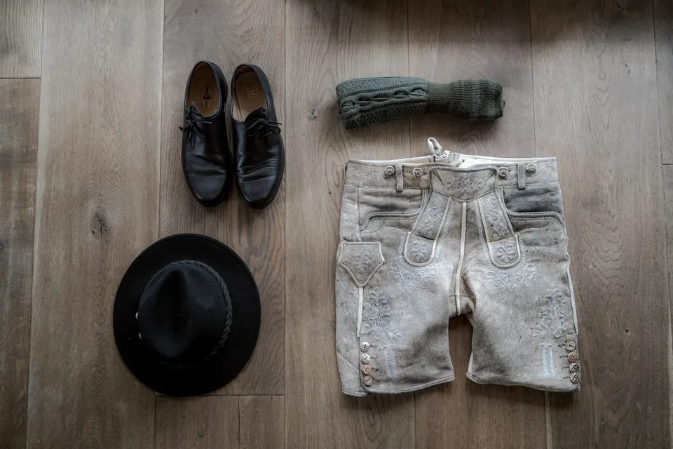
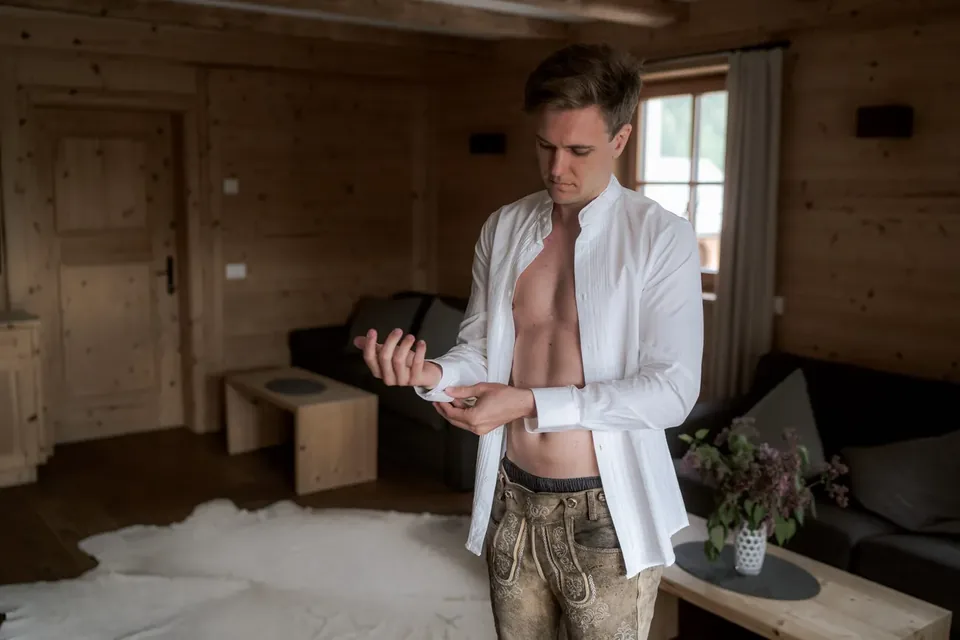
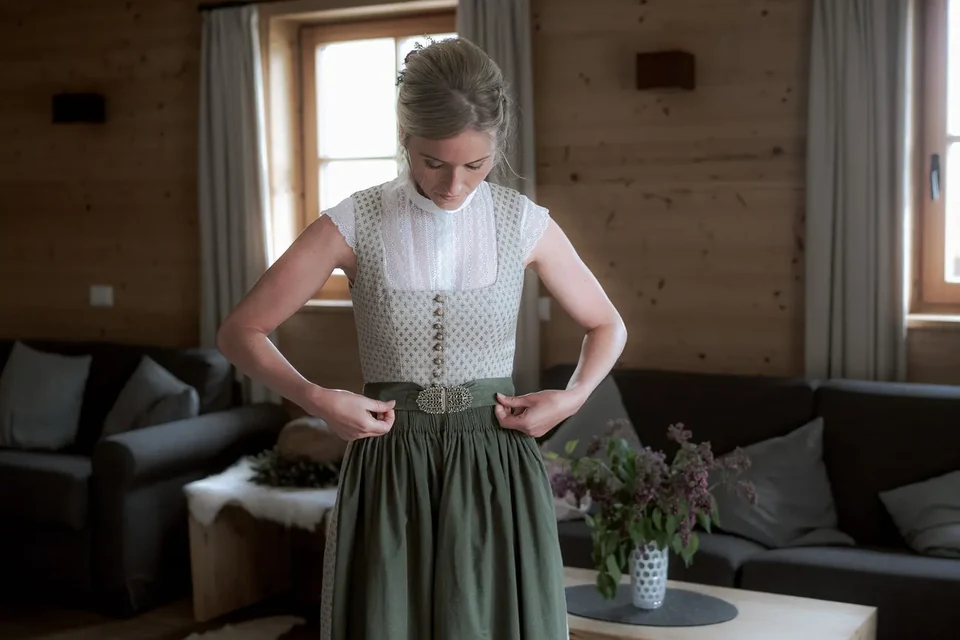
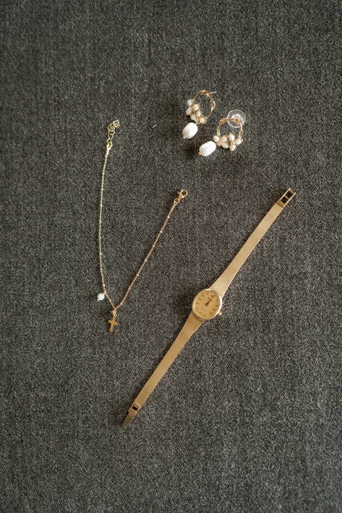
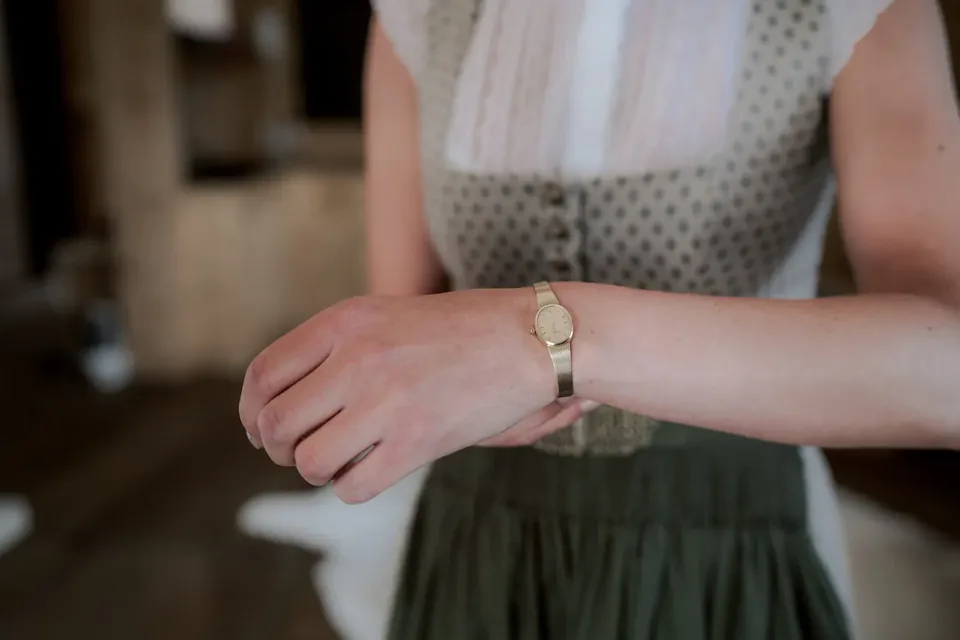
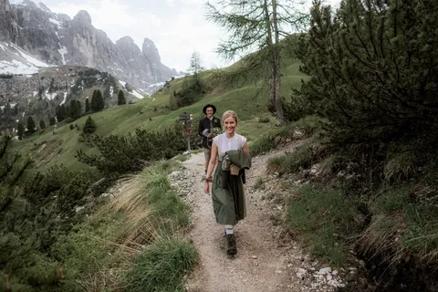
Non un servizio — il giorno più bello di sempre, in quota.
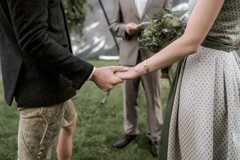
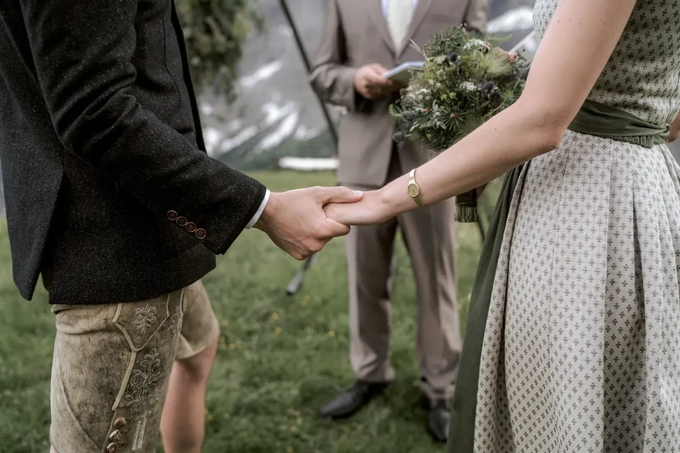
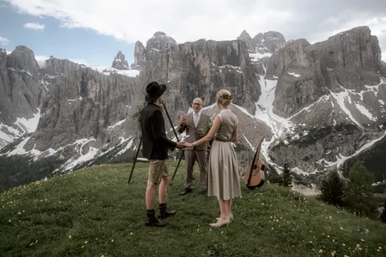

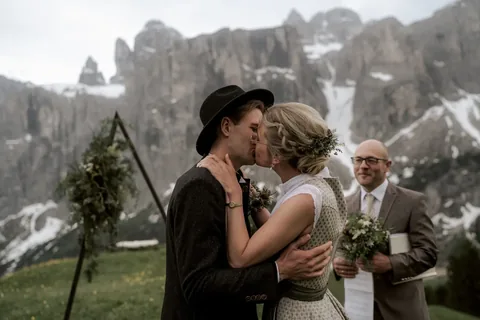
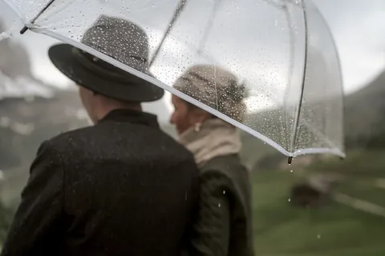
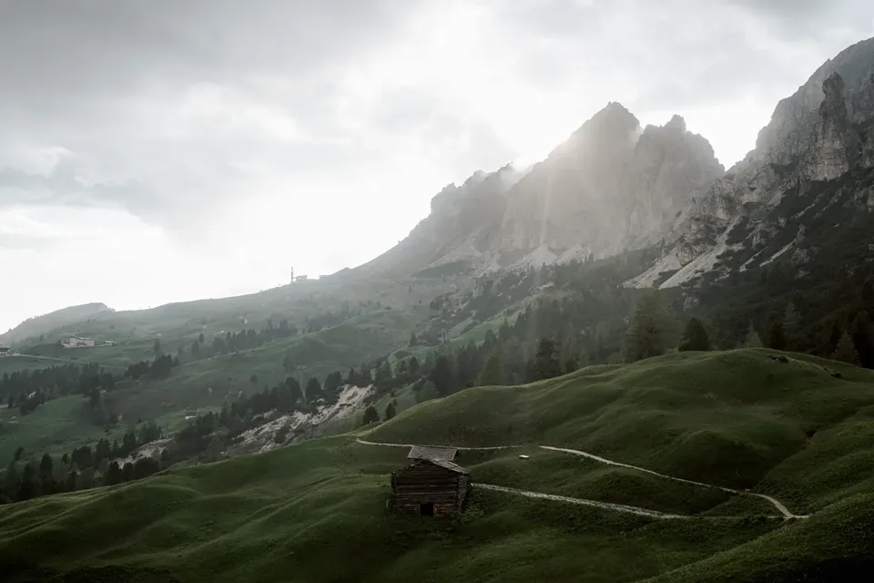
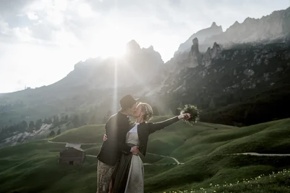
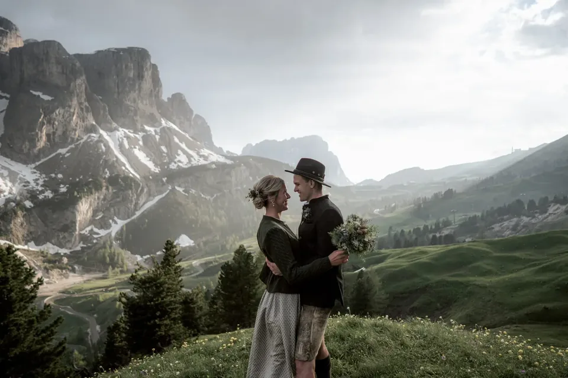
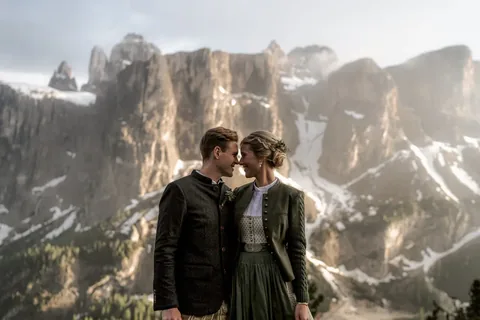
Comunque immaginiate la vostra giornata — un’alba silenziosa, una vetta, un lago tutto per voi — la pianifichiamo intorno a voi due e la fotografiamo com’è stata davvero.
Usiamo cookie per statistiche anonime (Google Analytics tramite Google Tag Manager) per migliorare il sito. L'analisi parte solo con il tuo consenso. Privacy